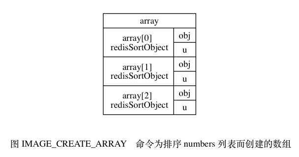

SORT <key> 命令的实现¶
SORT 命令的最简单执行形式为：
SORT <key>
这个命令可以对一个包含数字值的键 key 进行排序。
以下示例展示了如何使用 SORT 命令对一个包含三个数字值的列表键进行排序：
redis> RPUSH numbers 3 1 2
(integer) 3
redis> SORT numbers
1) "1"
2) "2"
3) "3"
服务器执行 SORT numbers 命令的详细步骤如下：
- 创建一个和
numbers列表长度相同的数组， 该数组的每个项都是一个redis.h/redisSortObject结构， 如图 IMAGE_CREATE_ARRAY 所示。 - 遍历数组，
将各个数组项的
obj指针分别指向numbers列表的各个项， 构成obj指针和列表项之间的一对一关系， 如图 IMAGE_POINT_OBJ 所示。 - 遍历数组，
将各个
obj指针所指向的列表项转换成一个double类型的浮点数， 并将这个浮点数保存在相应数组项的u.score属性里面， 如图 IMAGE_SET_SCORE 所示。 - 根据数组项
u.score属性的值， 对数组进行数字值排序， 排序后的数组项按u.score属性的值从小到大排列， 如图 IMAGE_SORTED 所示。 - 遍历数组，
将各个数组项的
obj指针所指向的列表项作为排序结果返回给客户端： 程序首先访问数组的索引0， 返回u.score值为1.0的列表项"1"； 然后访问数组的索引1， 返回u.score值为2.0的列表项"2"； 最后访问数组的索引2， 返回u.score值为3.0的列表项"3"。
其他 SORT <key> 命令的执行步骤也和这里给出的 SORT numbers 命令的执行步骤类似。

![digraph {
rankdir = LR;
node [shape = record];
subgraph cluster_numbers {
label = "numbers 链表"
style = dashed;
one [label = "StringObject \n \"1\""];
two [label = "StringObject \n \"2\""];
three [label = "StringObject \n \"3\""];
three -> one -> two;
}
subgraph cluster_array {
style = invis;
array [label = " array | { <array0> array[0] \n redisSortObject | { <obj0> obj | u } } | { <array1> array[1] \n redisSortObject | { <obj1> obj | u } } | { <array2> array[2] \n redisSortObject | { <obj2> obj | u } } "];
}
array:obj0 -> three;
array:obj1 -> one;
array:obj2 -> two;
label = "\n 图 IMAGE_POINT_OBJ 将 obj 指针指向列表的各个项";
}](../../_images/graphviz-fa054d26e13d181296780a491b4fb559fb1ec8d7.png)
![digraph {
rankdir = LR;
node [shape = record];
subgraph cluster_numbers {
label = "numbers 链表"
style = dashed;
one [label = "StringObject \n \"1\""];
two [label = "StringObject \n \"2\""];
three [label = "StringObject \n \"3\""];
three -> one -> two;
}
subgraph cluster_array {
style = invis;
array [label = " array | { <array0> array[0] \n redisSortObject | { <obj0> obj | u.score \n 3.0 } } | { <array1> array[1] \n redisSortObject | { <obj1> obj | u.score \n 1.0 } } | { <array2> array[2] \n redisSortObject | { <obj2> obj | u.score \n 2.0 } } "];
}
array:obj0 -> three;
array:obj1 -> one;
array:obj2 -> two;
label = "\n 图 IMAGE_SET_SCORE 设置数组项的 u.score 属性";
}](../../_images/graphviz-173ac0782ff3b828f9335886f6b097c1c649f165.png)
![digraph {
rankdir = LR;
node [shape = record];
subgraph cluster_numbers {
label = "numbers 链表"
style = dashed;
one [label = "StringObject \n \"1\""];
two [label = "StringObject \n \"2\""];
three [label = "StringObject \n \"3\""];
three -> one -> two;
}
subgraph cluster_array {
style = invis;
array [label = " array | { <array0> array[0] \n redisSortObject | { <obj0> obj | u.score \n 1.0 } } | { <array1> array[1] \n redisSortObject | { <obj1> obj | u.score \n 2.0 } } | { <array2> array[2] \n redisSortObject | { <obj2> obj | u.score \n 3.0 } } "];
}
array:obj0 -> one;
array:obj1 -> two;
array:obj2 -> three;
label = "\n 图 IMAGE_SORTED 排序后的数组";
}](../../_images/graphviz-304b960a90fd953c18cfdd27c4fd0974823b7783.png)
以下是 redisSortObject 结构的完整定义：
typedef struct _redisSortObject {
// 被排序键的值
robj *obj;
// 权重
union {
// 排序数字值时使用
double score;
// 排序带有 BY 选项的字符串值时使用
robj *cmpobj;
} u;
} redisSortObject;
SORT 命令为每个被排序的键都创建一个与键长度相同的数组，
数组的每个项都是一个 redisSortObject 结构，
根据 SORT 命令使用的选项不同，
程序使用 redisSortObject 结构的方式也不同，
稍后介绍 SORT 命令的各种选项时我们会看到这一点。